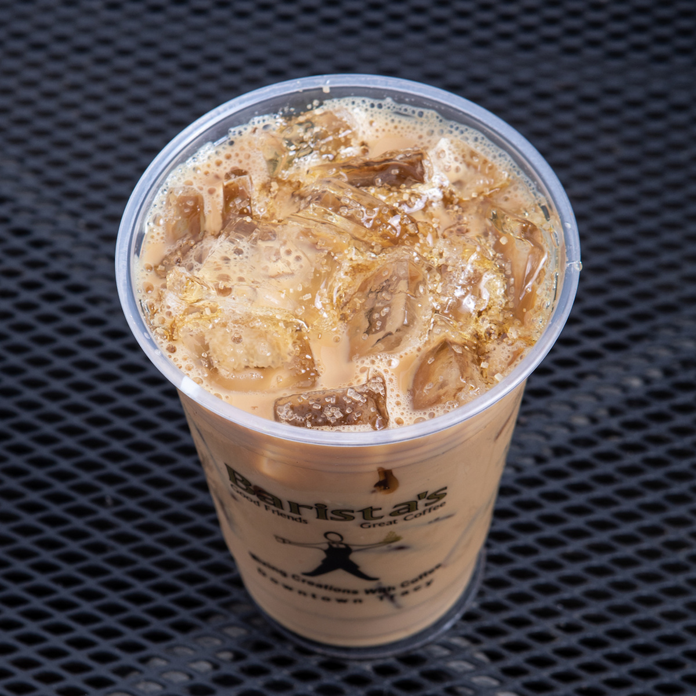

Twenty-seven ways
to blend a coffee.
Rocky Road. Crème brûlée. Butter pecan white mocha.
The blended board is the reason people drive in from Mountain House and Lathrop. Every one of them is built to order, and half of them aren't on any other menu in town.

The panini press
never cools down.
Grilled ciabatta, pesto mayo, pepper jack.
Ten panini, twelve bagel sandwiches, and a breakfast list that runs from open until the bread's gone. Everything is pressed after you order it, which is why the line moves the way it does.

Four point six, and holding.
Across Google, Yelp and every delivery app it's been listed on, Barista's has never dropped below 4.6 stars — over eleven thousand ratings and counting. That is not a marketing number. That is the same people coming back.
Open at 7
Monday through Saturday, no exceptions151 things on the menu
And staff who remember which one is yoursOne location
112 West 10th. There is no second Barista's.Order at the boards.
Sit by the window.
Chalk menus, wood tables, and a patio on 10th.
The whole menu is up on the boards behind the counter, written by hand and changed when it needs changing. Grab a table inside, or take one of the two-tops out front and watch downtown wake up.

Visit
On the corner of 10th and Central, downtown Tracy.
Hours

Find us
112 W 10th StTracy, CA 95376
Look for the awning on the corner. The patio two-tops are right out front, and the door is on 10th.